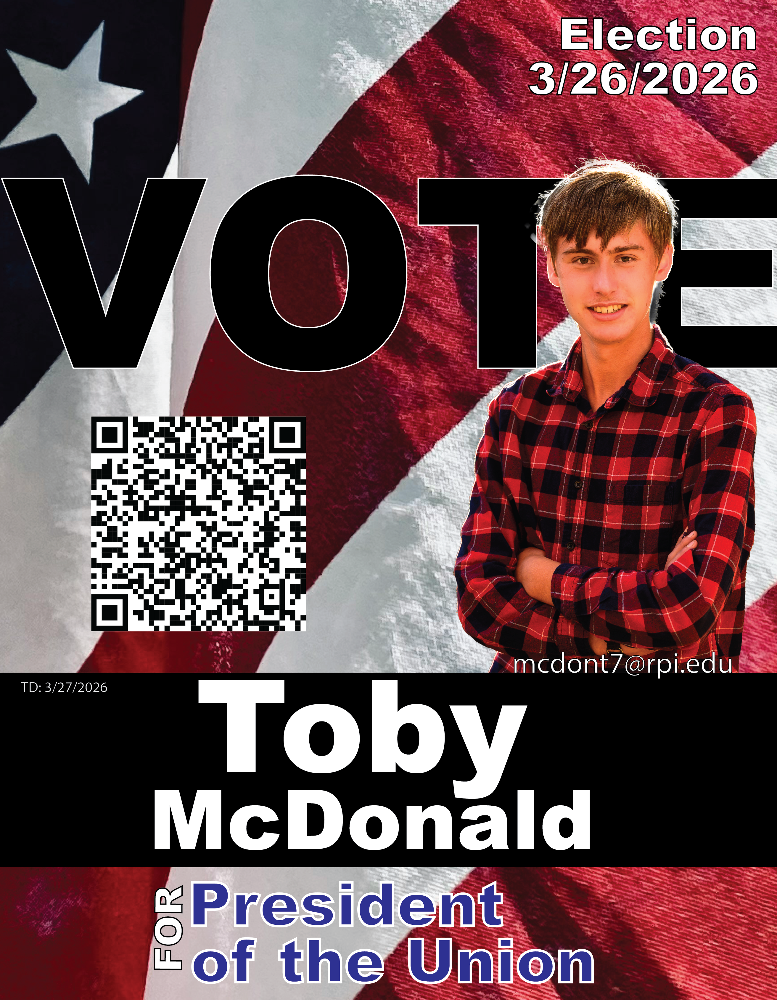

Protect Union Resources
Improve stewardship of time, space, and money so students see direct value from every decision.
RPI Student Union
President of the Union
Our Union is strongest when students are heard and resources are respected. I will build transparent and accountable systems that best steward the Union's resources.

Toby McDonald '26 '27G
for President of the Union
About Toby
I am completing a B.Sc. in Computer Science with a dual major in Information Technology & Web Science, and a minor in Interactive Media & Data Design. I am also currently a Co-terminal MBA candidate.
I have served on the Union Executive Board since freshman year as a Financial Advisor, Club & Organization Representative, Member at Large, and most recently as the Chairman of the Business Operations Committee. I have also previously chaired the GM Week subcommittee of the Union Programming and Activities Committee (UPAC) and served as an ex-officio trustee of the Rensselaer Newman Foundation.
On campus, I volunteer with RPI TV and as an EMT with RPI Ambulance. In the wider RPI community, I serve as a Firefighter/EMT at the Brunswick #1 Fire Company and a Red Cross volunteer in the Capital District as a Regional Disaster Duty Officer, a Disaster Action Team Supervisor, and as the County Coordinator for Rensselaer County.
Platform
The Union should amplify student voices and protect student resources. Here is the core of my agenda.
Improve stewardship of time, space, and money so students see direct value from every decision.
Overhaul how we listen and respond so student feedback shapes every priority and policy.
Crack down on institutionalized waste and abuse across the Union, including administrative and student government organizations.
Ensure staff and leaders are fully responsive to student and club needs with clear turnaround standards.
Action Plan
"If the Union works for students, every student organization wins."
— Toby McDonaldDownloads
Grab the latest campaign materials.
Get Involved
Share your ideas, concerns, or the changes you want to see. Your message shapes our priorities.
{kind=link}
{kind=link}